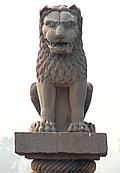
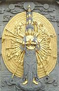
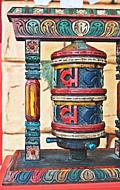

Buddhism is an offspring of various sects lumped under "Hinduism" and
of Jainism. While eventually driven out of India it still flourishes in
surrounding countries and may be the fourth most populous religion in
the world. Including an even wider range of ethnicities and languages
than Hinduism, variation in dietary customs is to be expected.
Buddhism was founded in about 500 BCE by a Nepalese prince named Siddhartha Gautama. He was a fully trained and certified warrior and scheduled to become king, but instead escaped from the palace by night and wandered about India as a mendicant trying various forms to achieve enlightenment. He adopted Jainism, tried asceticism, studied Vedic Hinduism and non-Vedic Hinduism, all to no avail. He finally succeeded while meditating under a Bodhi tree (Sacred Fig Tree Ficus religiosa), and from that time on was known as Gautama Buddha.
The Buddha spent the rest of his life teaching the dharma (the underlying order of life, nature and the cosmos). Upon his death at 80 his well briefed disciples continued the teaching and Buddhism became a major influence on the Indian subcontinent and beyond. It is, however, endlessly debated whether Buddhism is a religion or a philosophy.
The Hindu Brahmins were very much against Buddhism because it negated the caste system. They campaigned vigorously against it, even making changes in Hinduism (like promoting the cow cult) and succeeded in driving it almost entirely out of India by the 12th century CE. Recently, though, it's started to seep back in.
Buddhism did survive and thrive in surrounding countries and is thought to now be the fourth most populous "religion". The major branches of Buddhism are Theravada, Mahayana, and Vajrayana, as detailed below.
Give the rules stated above, it may seem strange that the world's Buddhist populations are predominantly meat eaters, and they honor neither the Hindu ban on cow nor the Muslim ban on pig. They do, however, prefer that the slaughtering be done by Chinese or Muslims, though Christians will do too if any are on hand. If a Buddhist must kill an animal there are certain last rites to be performed for the beast, depending on sect.
Strict adherence to vegetarianism is the rule for priests, monks, nuns and those who feel they are on the Bodhisattva path - except in some schools and sects. The Buddha himself is reported to have died from eating tainted pork. Some apologists say it was mushrooms but pork is well documented. This pork may have been provided in accordance with the exception rule (see below) or it may not.
It is said the Buddha sometimes ate meat that was prepared specifically for him in violation of the exception rule. This is said to be to demonstrate freedom from attachment - even attachment to the rules of Buddhism. Either that or he just kinda liked the stuff.
 Theravada (Teaching of the Elders) is the oldest surviving form of Buddhism. It is prevalent in Sri Lanka, Burma, Thailand, Cambodia, and Laos. It is also practiced by some ethnic groups in Vietnam, parts of southwestern China. Bangladesh, Malaysia and Indonesia. While gaining popularity in Singapore, Australia and California, it is also the form that's sneaking back into India.
Monks and priests of Theravada are generally mendicants who depend for their sustenance on donations by the people. In some regions most young men are drafted to be monks for a particular period of service before re-entering the community as full adults.
In Burma the monks march out in the morning in their saffron robes carrying their begging bowls and the people crowd around to place their offerings in the bowls. In other areas this process may be much less formalized.
Clearly monks have little control over what is put in the bowl, and are expected to eat whatever food is placed there. Because the population is not vegetarian meat may be what is on hand and may be included and it is allowed to be eaten in accordance with standard rules.
The standard rule is: meat must not have been prepared specifically for you
and you must not have seen or been in any way involved in the slaughter of
the beast. If you are an unexpected guest in a household and you were unaware
they happened to be serving roast pig, they may offer it to you and you may
eat it. If you were an expected guest and they prepared roast pig for you
you must decline it. Photo of an Asoka pillar
distributed under
Creative Commons Attribution ShareAlike v2.5.
 Mahayana Buddhism began developing out of Theravada Buddhism in about 100 BCE. It was carried to China as early as 200 CE but did not become significant in India until around 500 CE. It is now the dominant form of Buddhism in China, Japan, Korea, Taiwan and Vietnam. The Japanese Zen school was the most popular version in California but massive influx of both Theravada and Vietnamese Mahayana from Southeast Asia since the Vietnam War as well as support for Tibet has pushed Zen into the background.
Mahayana monasteries were well supported financially and acquired considerable land, so the monks were able to raise plenty of food for their own use. Mahayana monks and nuns are, therefore, expected to follow a strictly vegetarian diet in accordance with the Buddha's doctrine of no killing, along with subscripts that shunning all animal products facilitates enlightenment. Many vegetarian recipes developed by and for the monks are to be found in cookbooks from the countries within the Mahayana range. Strangely, many of them mimic meat dishes as closely as possible.
On the other hand, the major Japanese Kamakura sects, Zen, Nichiren
and Jodo, have loosened the rules and do not required vegetarianism.
Chinese and most Korean Buddhist monks and nuns are strict vegetarians.
This often includes non-violence to plants so root vegetables are off the
menu in favor of beans and fruit. Some sects observe this additional
strictness only during special occasions. Photo
of Chinese bodhisattva image is public domain.
 This tantric form developed from Mahayana and is now prevalent in Tibet, Nepal, Bhutan, Mongolia, Arunachal Pradish (Indian state) and some areas of the Russian Far East, Siberia and Manchuria. In the U.S. it is generally known just as "Tibetan Buddhism" and is becoming more popular here along with support for Tibet.
In the region dominated by Vajrayana neither the people nor the monks and nuns have had the luxury of vegetarianism - year round agriculture is simply impossible. For this reason, and explaining that their tantric practice makes vegetarianism unnecessary, Tibetan Buddhists do not attempt to avoid meat.
Though many monks and lamas have fled Tibet and live in vegetarian
parts of India or other countries where a vegetarian way is not
difficult, they retain their meat eating ways. American and European
converts from other Buddhist forms often give up their vegetarianism
as well to be more in tune with their lama (1).
This list does not include all sources used to prepare this page but those listed are particularly informative.
buddha.html 080113
©Andrew Grygus
- ajg@clovegarden.com - Linking and non-commercial use permitted